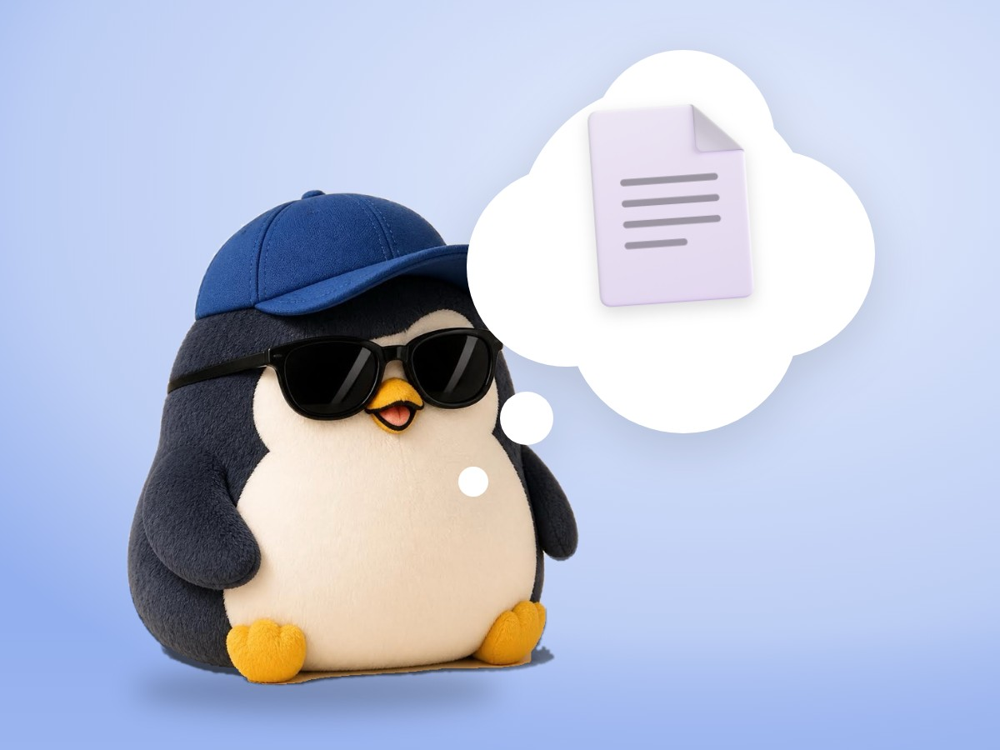

📝 DRAFT · 下書き — まだ本番に出していません · 下書き一覧
🐧 EVERYDAY LIFE⚡ 21 SEC
Ideas only in your head float away, so print them and hold them 📄

God Mode
Your head and the internet have no limits, so you feel like a god.
A Little Down
But you lose the feeling of changing real life, and feel a little down.
⚡ TRY IT
Back to the ground
The penguin is floating on its ideas. Help it land!
🐧📄
🌍 Feels real
💡 Ideas in your head: 3
📄 Papers in your flippers: 0
Your head is full of ideas. You feel like a god… but you are floating.
More ideas! Higher and higher… but it feels less real. ☁️
Clunk! A real paper in your flippers. 📄
🌱 Feet on the ground! Now you can really start. 🐧
Hold It
So write your decision on 1 page and print it. Holding it puts your feet on the ground.
The Philosophy
Burkeman skips the big philosophy behind this. One reason is that he does not understand it himself.
📚 I learned this from Oliver Burkeman's newsletter. Read the original (English)